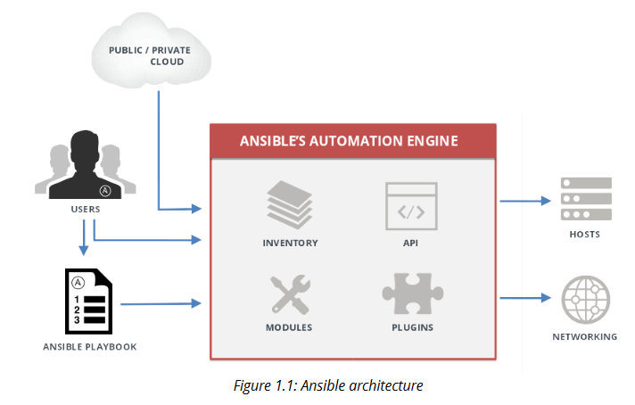
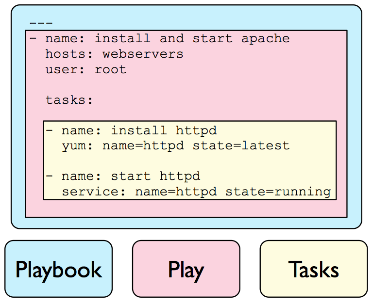
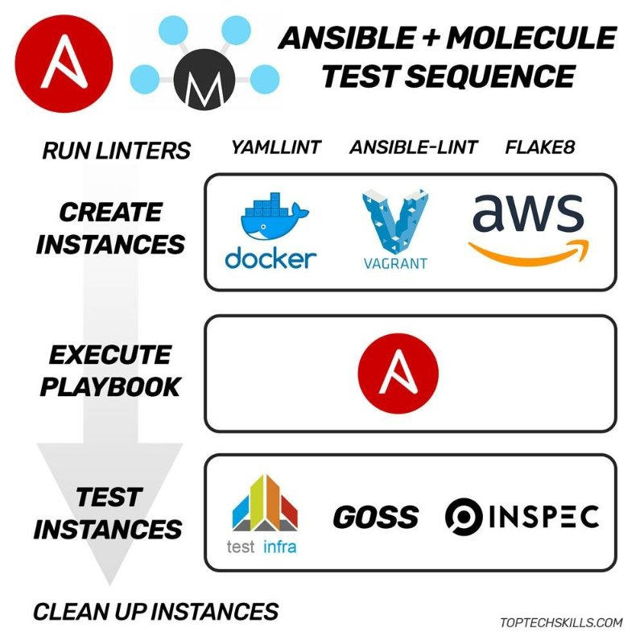

**Use Cases**</p>
- Configuration Management</p>
- Software Provisioning</p>
- Security and Compliance</p>
- Application Deployment</p>
- Orchestration</p>
- Continuous Delivery</p>
<!-- more Elements -->
**Attributes**</p>
- Simple</p>
- Powerful</p>
- Agentless</p>
- Cross Platform</p>
- Over 450 Modules</p>
- Big Community</p>
<!-- more Elements -->
Note: Ansible es una herramienta de automatización open source escrita en python, que nos ayuda a configurar hosts remotos, aprovisionar software, e inclusive orquestar tareas mas complicadas como Continuos Deployment o Rolling Updates con Cero Downtime. En lugar de tener scripts para cada tarea. Ansible es:
Simple
Poderoso
No necesita agente
Multiplataforma
Cuenta con mas de 450 Modulos
Gran comunidad alrededor del proyecto
Ansible
Ansible Architecture
Note: Revisando la arquitectura de Ansible tenemos:
Playbook: "El libro de jugadas" que contiene las tareas a ejecutar.
Inventario:donde se definen los hosts con los cuales va a interactuar ansible, esta formato INI. Se definen grupos de hosts y algunas variables opcionales ()IP, hostname, ssh user, key file)
Modulos son pequenos programas que ejecuta Ansible de manera remota.
API: Aun esta en construccion pero hay plugins que ya la usan (ansible tower)
Plugins: Agregan funcionabilidad adicional al core de Ansible (ARA)
Todo esto se se aplica a los hosts remotos o a los dispositivos de red.
Ansible

Note: Los componentes de un playbook son, revisando desde la unidad mas pequena son:
Tasks, que ejecutan el modulo de Ansible
Al conjunto de varias tasks relacionadas, se le llama Play
Al conjunto de diferentes Plays/jugadas se le llama Playbook.
Ansible
Playbooks contain/connect roles
Roles contain plays
Plays contain tasks
Tasks execute a module
Tasks run sequencially
Handlers are triggered by tasks, runs once at the end of the play
Note: Revisando desde la unidad mas grande tenemos Role is a list of tasks reusable Playbook conecta los roles con los hosts
Note: Por que es importante la automatizacion de pruebas?
Test Automation
Reliable Code
Quality
Fast feedback
Time and cost saving
Faster Development Cycle
CI/CD
Repeatability
Test same change accross multiple environments (OS, Providers); multiple data sets
Note: La automatizacion de las pruebas nos ayuda a:
Tener un codigo mas seguro y confiable
Mejora la calidad de nuestro codigo ya que permiten que se ejecuten más pruebas en menos tiempo, aumentando la cobertura de las pruebas, y realizando más exigentes.
Reducimos el tiempo y el costo de un desarrollo
Nos ayuda a tener un ciclo de desarrollo mas rapido ya que lo podemos/debemos integrar con alguna herramienta de CI/CD
Repetibilidad, con lo cual podemos probar el mismo cambio en multples ambientes, sistemas operativos, o provides, o con diferentes data sets
Test Automation
Testing options for Ansible
Ansible tasks - Test Ansible w/ Ansible
Test Kitchen - Test Ansible w/ Ruby
ansible-test - Test Ansible w/ Unmaintained Python
Molecule - Test Ansible w/ Python
Note: Algunas herramientas que revise, despues de ver la conferencia de Elana Hashman en en Ansible Fest 2017 son:
Testing Ansible with Ansible Tasks -> Test ansible with Ansible tasks Benefits:
As flexible and powerful as you need it Issues:
High development cost
Ansible can't detect ansible bugs
Need to write your own provisioner
Testing Ansible with ansible-test -> Benefits:
Written in Python
Solves the provisioning problem in "Test ansible with Ansible"
Simple tool with small codebase Issues:
Onlys support docker provisioner on dEbian-based images
Does not apear to be actively maintained
Testing Ansible with Test Kitchen -> Benefits:
Large community
Supports Ansible
Supportw windows testing for Ansible Issues:
Written in Ruby
Verifiers are Ruby or bash based
Installs Ansible on the target host and runs it locally
Molecule
Testing Ansible with Molecule
Tool designed to aid in the development and testing of Ansible roles.
Provides support for testing with multiple instances, operating systems, providers, test frameworks and testing scenarios.
Encourages an approach that results in consistently developed roles that are well-written, easily understood and maintained.
Note: De acuerdo a la propia documentacion de Molecule, se define como una herramienta disenada para ayudar en el desarrollo y pruebas de los roles de ansible. Brinda soporte para probar con diferentes instancias, OS, Providers, scenarios Se enfoca en generar los mejores roles posibles, tanto bien escritos como faciles de mantener
Molecule
Testing Ansible with Molecule
Pros
Cons
- Written in Python
- No Windows support
- Ansible-Native
- No Dinamyc Inventory support
- Established community
- Open Source
Note:
Escrito en python,
Desarrollado e integrado para ansible
Comunidad Madura
Open Source
Molecule
Testing Ansible with Molecule
Creates nodes for testing
Run the playbook on the nodes
Run the playbook again to test idempotence
Lints the Ansible code with ansible-lint
Lint the Python code with flake8
Runs the verifier tests on the nodes to ensure the desired state
Note:
Creamos los nodos para probar, dependiendo del provisioner puede ser Docker, Vagrant, AWS, Azure, etc
Se ejecutaran los playbooks en los nodos creados
Volvera a correr el playbook, para probar idempotencia, es decir, que el tarea se aplique varias veces sin cambiar el resultado de primera vez.
Buscaran problemas de estilo en el codigo de ansible usando ansible-lint
Buscaran problemas en el codigo de python con flake8
El verificador realizara loas pruebas para asegurar el estado deseado
Molecule
Testing Ansible with Molecule

Note:
Molecule
Testing Ansible with Molecule
What can I test?
Files exists and permissions
Service are running
User exists and is member of the correct groups
Package installed
Basic Software interaction (Test web server basic authentication)